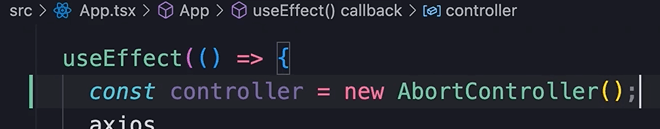
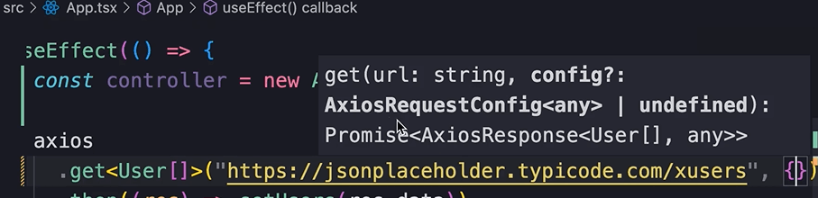
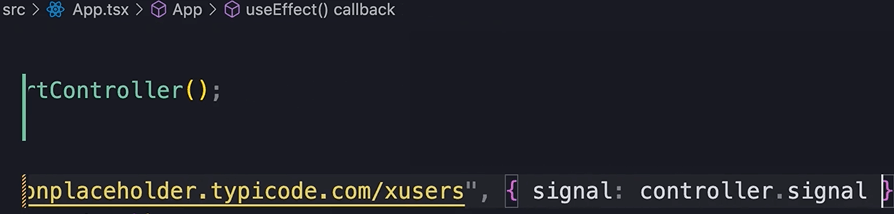
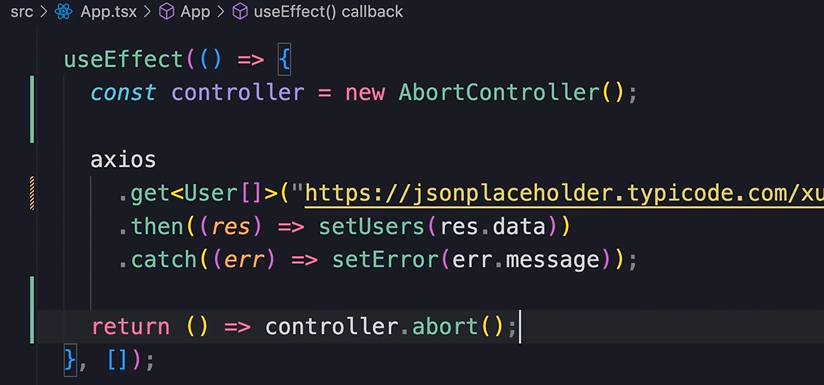
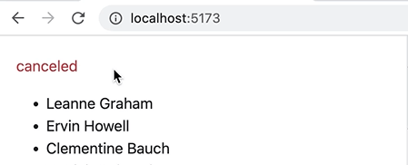
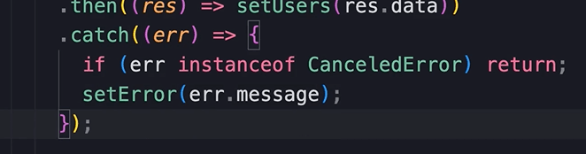

HOME
Cancelling a Fetch Request
Topic im talking about
Earlier we learned about effect clean up.
We learned that sometimes we need to return a cleanup func from our
effect.
In this example we are sending an HTTP request to the server to fetch
the users.
What if the user navigates away from this page?
We don't want to wait for the server to return the data, and then
render it here.
So as a best practice, when we fetch data in an effect, we should also
provide a cleanup func for cancelling the fetch request incase the
data is no longer needed.
To do that we create an object called controller.
cancelling a req with the Controller object
Create the controller obj...

This is a built in class in modern browsers that allows us to abort
async operations like, fetch req, dom manipulation, or any operation
that might take time to complete.
Now, when we call the get method, as a second arg we pass a config
obj...

In this object we set the signal property to controller.signal

Finally, at the end, return our cleanup fuction, which is
controller.abort()

Remove the x we added to the fetch url when simulating the err, so
that we are not simulating an err anymore.
Cancelled err
We get this ugly cancelled err...

To remove this add a condition to the catch block...

CanceledError is part of the axios module.
Good so the err is gone.
How strict mode affects this process
Now go to the network tab of the dev tool.
You can see that we have 2 req sent to the users endpoint.
The first request is canceled because as part of mounting this
component for the second time, first removes the previous component,
and that is like the user navigating away from the page.
At that moment our cleanup function is called and our req is canceled.
This is another benefit of strict mode in react. With strict mode
enabled, we don't have to worry about a req being sent to the server
twice.